院内・医院情報とアクセスをご覧ください
三島駅・下土狩駅近くの静岡県駿東郡長泉町の歯医者「MI総合歯科クリニック」の院内設備や医院情報、そしてアクセスをご紹介します。ホテルやエステサロンのような内装で、リラックスして治療に専念していただける診療ユニットや予防ケアルームのほか、みなさんのお口まわりのお悩みを伺うカウンセリングルームなど、安心のための院内環境づくりに力を入れています。精密治療につながる歯科用CTを完備し、衛生管理を徹底している歯科医院です。
院内紹介動画
院内紹介
-
外観
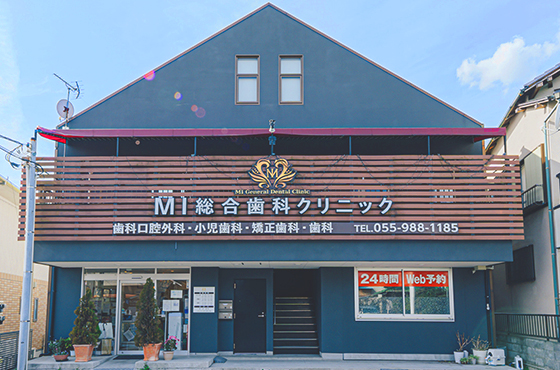
- 受付はガラス張りです。お気軽にご来院ください。
-
駐車場・駐輪場
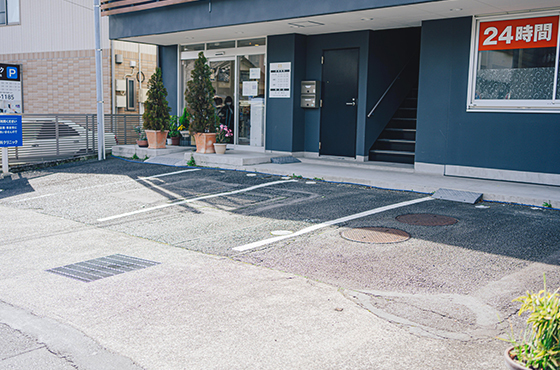
- お車でも安心してご来院いただけるように10台分の駐車場完備です。また駐輪場もありますので自転車通院も安心です。
-
受付
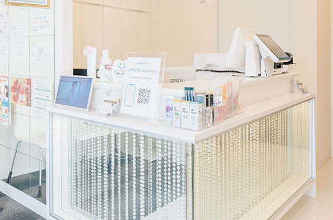
- スタッフがいつも笑顔でお迎えします。ご不明な点などがございましたら、なんなりとお尋ねください。
-
自動釣銭機
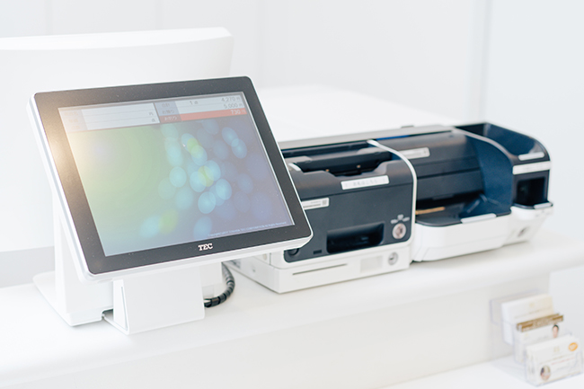
- 院内には自動釣銭機が設置されています。当院では衛生管理を徹底しており、スタッフが直接お金に手を触れない自動釣銭機はとても重要です。加えて、スタッフがお釣りを数える時間がなくなり、現金受け渡しのスピードも向上します。釣銭間違いなどのヒューマンエラーも起こらないため、患者様にとっても何かとメリットが多くなるのは間違いありません。
-
待合室
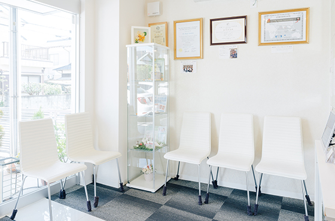
- まるでホテルのような雰囲気です。お名前をお呼びするまで、どうぞゆっくりおくつろぎください。院内はバリアフリー設計ですので、車いすの方もベビーカーをご利用の親御さんも安心です。
-
診療ユニット
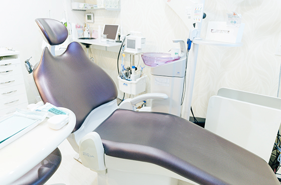
- 治療中も快適にお過ごしいただけるようなこだわりの診療ユニットです。また治療スペースは個室ですのでプライバシーも守られます。リラックスしながら治療に専念していただけます。
-
予防ケアルーム
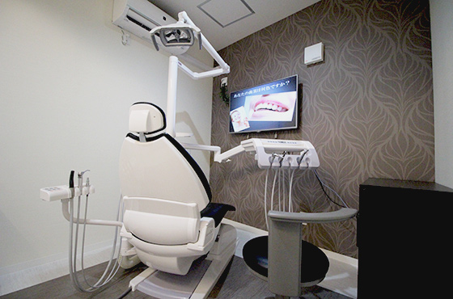
- 専用の予防ケアルームでPMTC（歯のクリーニング）やTBI（ブラッシング指導）など、虫歯や歯周病の予防処置メニューをお受けいただけます。リラックスしていただけるようにエステサロンのようなお部屋です。
-
パウダールーム
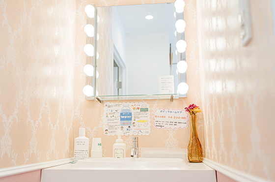
- ご来院前にブラッシングができなかった方もご安心ください。ブラッシングスペースを設置していますのでご自由にご利用いただけます。診療後の身だしなみチェックやお化粧直しにもご活用ください。
-
キッズスペース
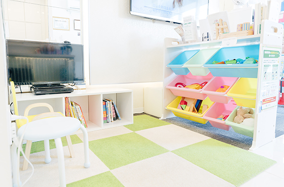
- お子さんとご一緒にご来院の際には、キッズスペースをご利用ください。院内はバリアフリーで診療室は個室です。ベビーカーのままスムーズに移動できます。
-
カウンセリングルーム
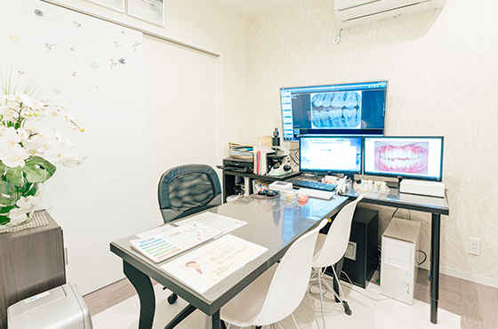
- 患者様とのコミュニケーションをしっかりとるため、独立したカウンセリングルームをご用意しています。どんなお悩みもご要望も遠慮なくお話ください。
設備紹介
精密診療を可能に～歯科用CT～
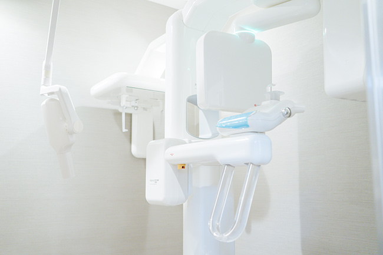
従来のパノラマ撮影ではお口まわりの情報を平面でしか確認できませんでしたが、歯科用CTを活用すれば、3D画像による全方向からの診断が可能で、神経や血管の走行位置や骨の厚みなどの精密情報が立体画像で把握できます。この3Dシミュレーションにより、信頼性の高い正確な診断と治療が可能となるのです。
また、高速スキャンなので少ない被ばく量での撮影が可能で、人体への影響を小さく抑えられます。身体にも環境にもやさしく、歯科診断に必要な豊かな機能を持っている次世代のデジタルX線診断装置です。
「見えなかったもの」「診たいもの」を「みえる」ようにするテクノロジーと、ドクターの「幅広い知識」「確かな技量」の融合で、より正確な診断と治療をご提供いたします。
衛生管理徹底のために～エピオスエコシステム～
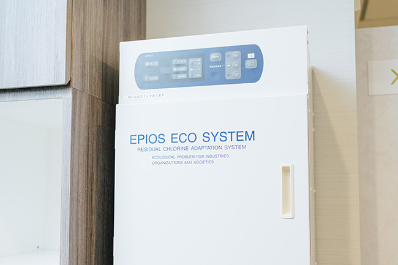
患者様に安心して治療を受けていただくために、院内の感染予防対策として「エピオスエコシステム」を導入しています。
このシステムでつくる「エピオスウォーター（高濃度電解次亜塩素酸水）」は細菌やウィルスへの殺菌能力に優れています。高純度の塩と水を電気分解してつくられるので、治療中の患者様のうがいや手洗いに安全性の高い水をご利用いただけます。
また、口の中の細菌を不活性化して、タンパク質汚れを分解するので、口のネバつきが気になる方や口臭が気になる方、歯周病の予防にも高い効果が期待できます。治療中の水にもこだわった当院で、口臭予防・歯周病予防・虫歯予防を心がけていきましょう。
医院情報
| 医院名 | 医療法人社団 翼会 MI総合歯科クリニック |
|---|---|
| 住所 | 〒411-0943 静岡県駿東郡長泉町下土狩181-4 |
| TEL | 055-988-1185 |
| 診療時間 | 月 9:00～13:00 / 14:30～19:00 火 9:00～13:00 / 14:00～18:00 水 9:00～13:00 / 14:30～19:00 木・金 9:00～13:00 / 14:30～18:30 土 9:00～13:00 / 14:00～17:30 |
| 休診日 | 日・祝日 |
アクセス
| 駐車場 | 10台分完備 ※駐輪場もあり |
|---|---|
| 最寄り駅 | 東海道本線 「三島駅」・「下土狩駅」 |
| アクセス |
|
|
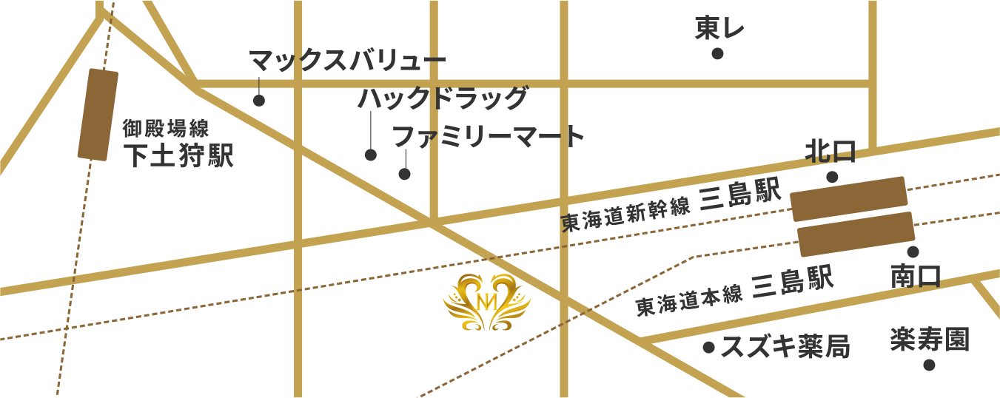 〒411-0943 |
|
アクセス詳細
-
1：三島駅南口
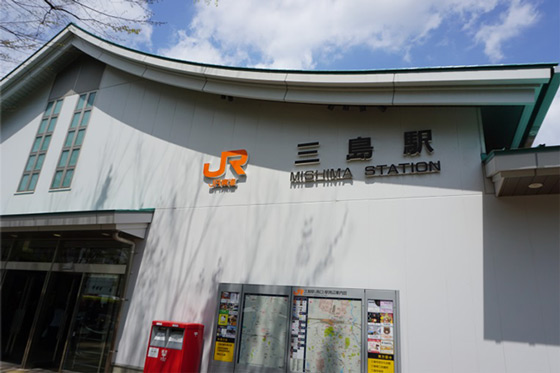
-
2：駅を背にして右方向へ
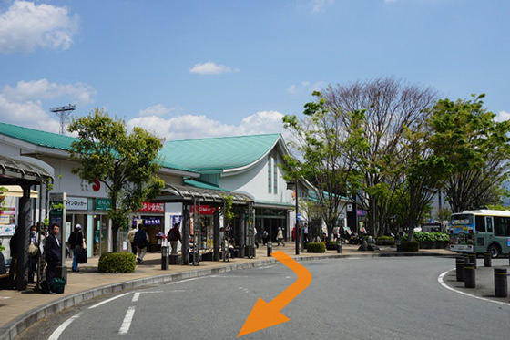
-
3：観光案内を右手に通過
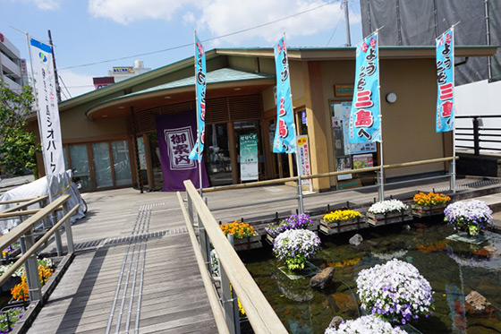
-
4：楽寿園入り口を左手に通過
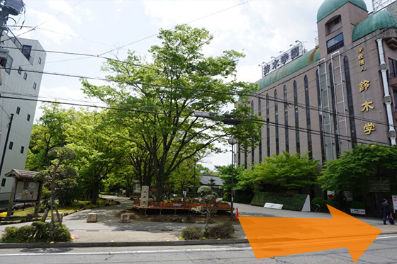
-
5：踏切を渡ると右手に三島信用金庫
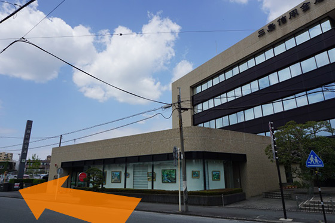
-
6：突き当りの三叉路を右折
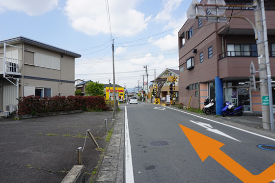
-
7：踏切通過
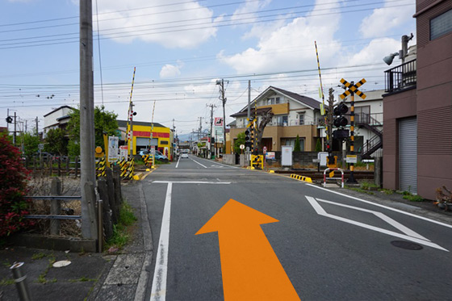
-
8：直進50m、かどやさん左折
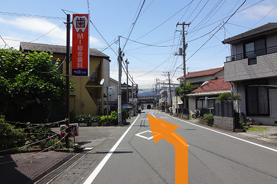
-
9：到着
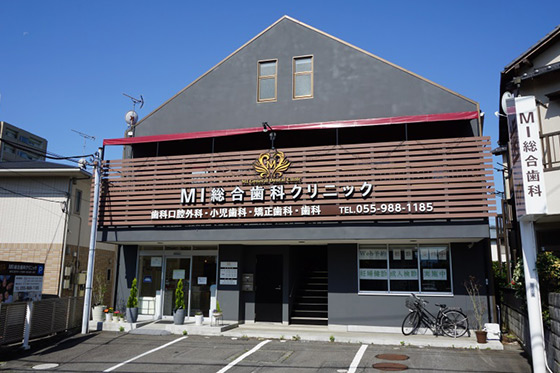